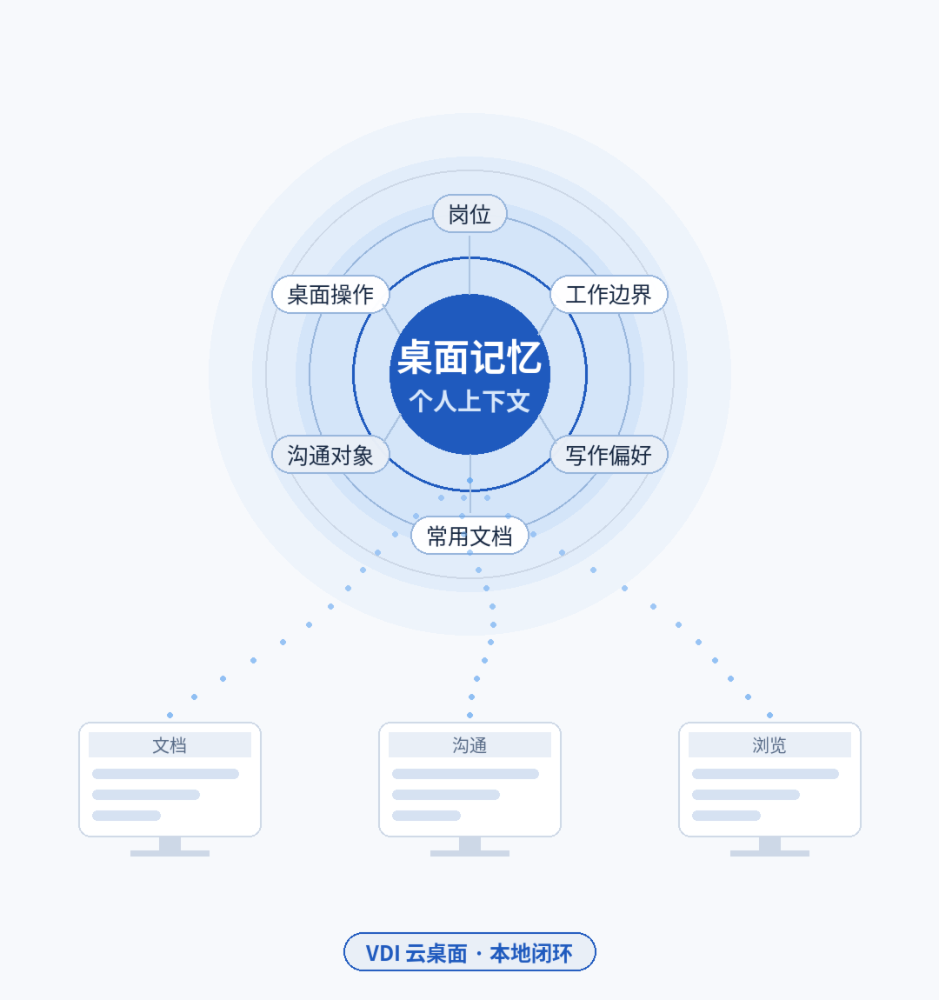
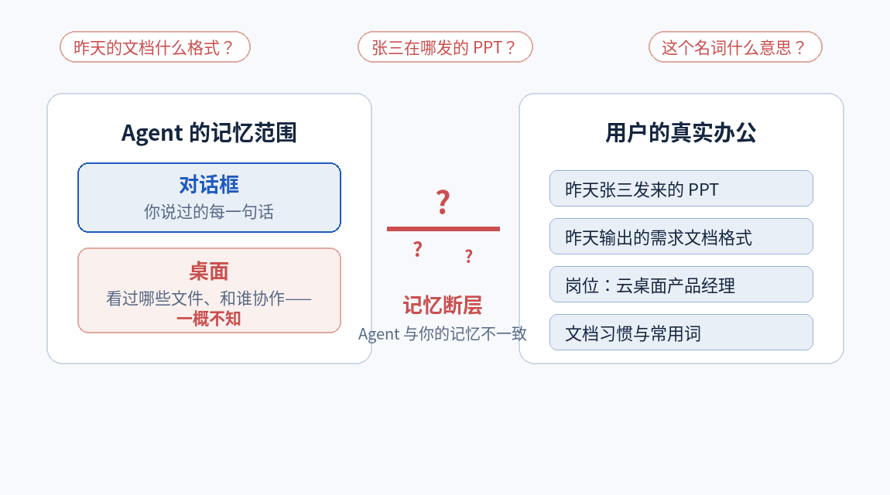
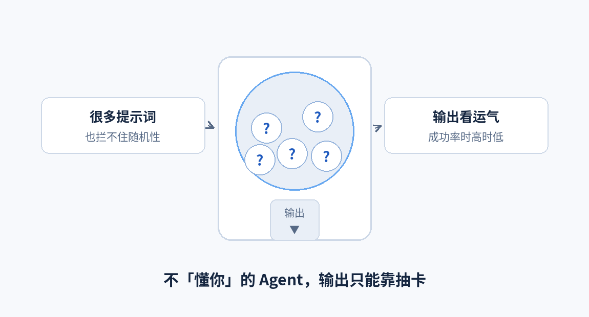
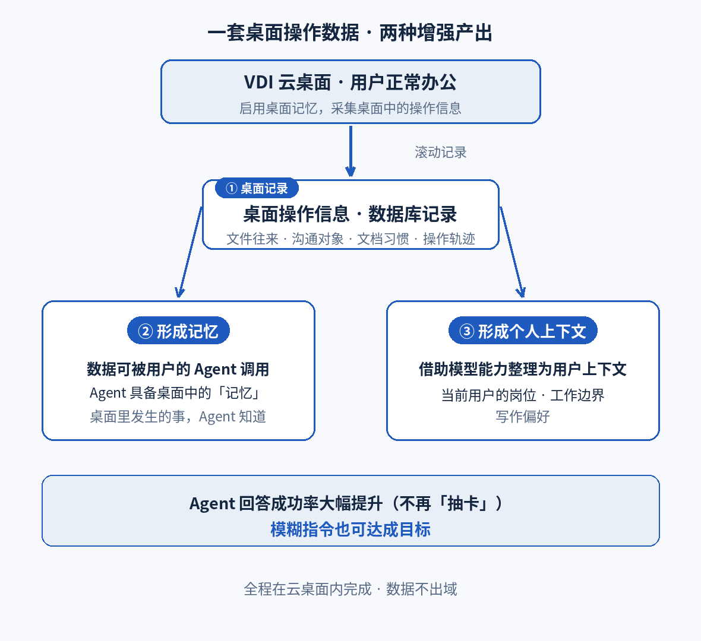
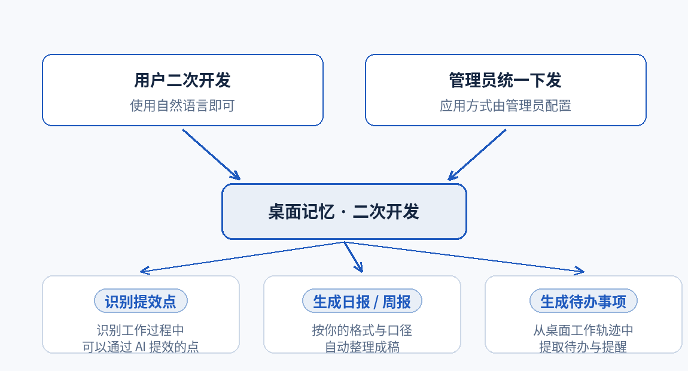
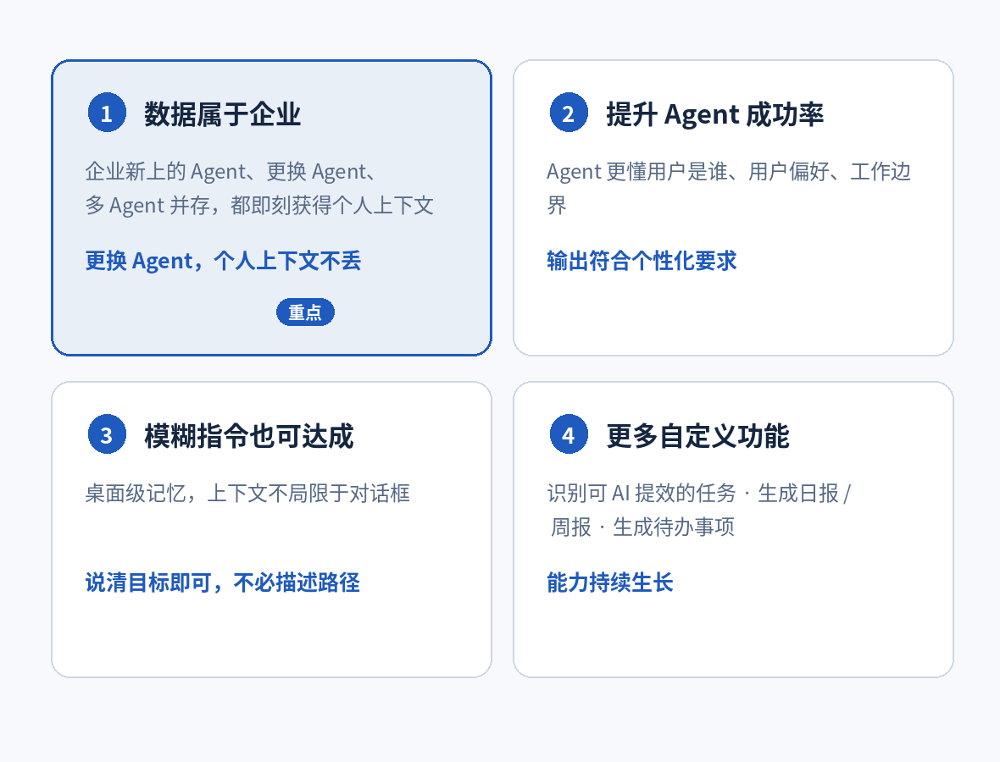
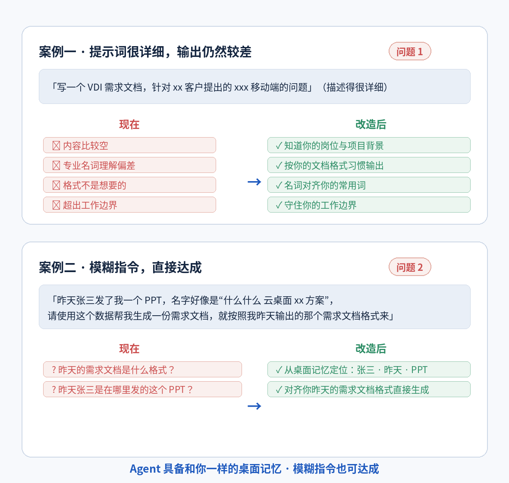

云
企业级云桌面 · AI Agent 增强方案
让云桌面里的
AI Agent 真正
「懂你」
基于
VDI 桌面记忆
的 Agent 增强方案
不再
「抽卡」
模糊指令
可达成
数据
属于企业
面向企业级云桌面环境 | 2026

桌面里的每一次操作，都沉淀为 Agent 可用的记忆
问题现象
提示词很多，输出仍然较差；模糊指令，
无法达成
1
用户提供了很多提示词，Agent 的输出
效果仍然较差
写 VDI 需求文档：内容比较空 · 名词理解偏差 · 格式不想要 · 超出工作边界
2
很难通过
模糊指令
达成目标
办公桌面上发生的事情 Agent 并不知道——它只知道对话框里的事情
例
「张三发了我一个 PPT，帮我生成需求文档，按我昨天的格式来」
Agent 只能反问：昨天的文档什么格式？张三在哪里发的 PPT？

Agent 和人的记忆不一致，面对模糊指令就不知怎么办
企业上下文已让 Agent 理解业务——但 Agent 不理解
「个人」
，依然无法高质量输出
原因分析
Agent 不「懂你」，只能
「抽卡」
；对话框之外，一片空白
1
关于问题 1：Agent
不了解当前这个用户
不了解你是谁、工作边界是什么、偏好是什么——它就只能通过「抽卡」来猜你要什么
2
关于问题 2：Agent
只能记住对话框里的内容
你在对话框中和它说过的内容它记得，但你在桌面里面做的事情它都不了解
≠
企业上下文
≠
个人上下文
企业级知识已有方案；个人的偏好、工作边界、常用词，是缺失的一环

不「懂你」的 Agent，每一次输出都像抽卡
我们的解决方案
在 VDI 桌面启用
「桌面记忆」
——一套操作数据，两种增强产出
①
桌面记录
：采集桌面操作信息并记录
在 VDI 桌面中启用桌面记忆，即可采集用户在桌面中的操作信息，并记录下来
②
形成记忆
：让 Agent 具备桌面中的「记忆」
这些数据一方面可以被用户的 Agent 调用——Agent 具备了和你一样的桌面记忆
③
形成个人上下文
：整理为用户上下文
借助模型的能力整理为用户上下文，提升 Agent 成功率：岗位、工作边界、写作偏好

桌面记录 → 形成记忆 → 形成个人上下文
用户照常办公 · 记忆安静记录 · Agent 输出
贴合你的岗位与习惯
如何解决上述问题
两个问题，一次解决：
不再「抽卡」
，模糊指令也可达成
1
Agent 回答成功率提升
（怎么解决问题 1）
桌面里的所有 Agent 都了解当前用户是谁，知道他的工作边界和写作偏好——大幅提升成功率，不再「抽卡」
2
模糊指令也可达成目标
（怎么解决问题 2）
Agent 具备和你一样的桌面记忆，可以通过模糊指令达成任务
↺
回到开头的两个场景
VDI 需求文档：直接对齐你的格式与边界；张三的 PPT：从桌面记忆直接定位
同一套桌面数据，持续支撑每一次 Agent 调用
想知道两个案例的具体变化？
点击下方按钮逐条对照
更多自定义功能
桌面记忆支持
二次开发
：自然语言即可，管理员也能统一下发

用户自然语言开发 + 管理员下发，两种应用方式
说
自然语言
二次开发
用户用自然语言即可基于桌面记忆开发自己的应用方式，无需专业开发
管
管理员
下发应用方式
也可由管理员统一下发应用方式，全员开箱即用
例
举例如下
识别工作过程中可以通过 AI 提效的点；帮我生成日报、周报；帮我生成待办事项等等
用户价值总结
四条价值：从「能用的 Agent」到
「懂你的数字同事」

数据属于企业 · 成功率提升 · 模糊指令可达成 · 自定义功能
1
数据属于企业
（重点）
企业新上的 Agent、更换 Agent、多 Agent 并存，都可以即刻获得个人上下文——更换 Agent，个人上下文不丢
2
提升 Agent 的成功率
Agent 更懂用户是谁、用户偏好、工作边界，输出的内容符合用户的个性化要求
3
模糊指令也可达成
拥有桌面级记忆，让 Agent 的上下文不局限于对话框，模糊指令也可达成
4
更多其他自定义功能
识别可 AI 提效的任务、生成日报 / 周报、生成待办事项
让云桌面里的每一个 AI Agent，都成为
懂你的数字同事
分支 · 两个案例逐条对照
同一个案例：
现在
的问题 →
改造后
的效果

案例一：VDI 需求文档 · 案例二：张三的 PPT——改造前后逐条对照
按「上一步」或 Esc 返回主线